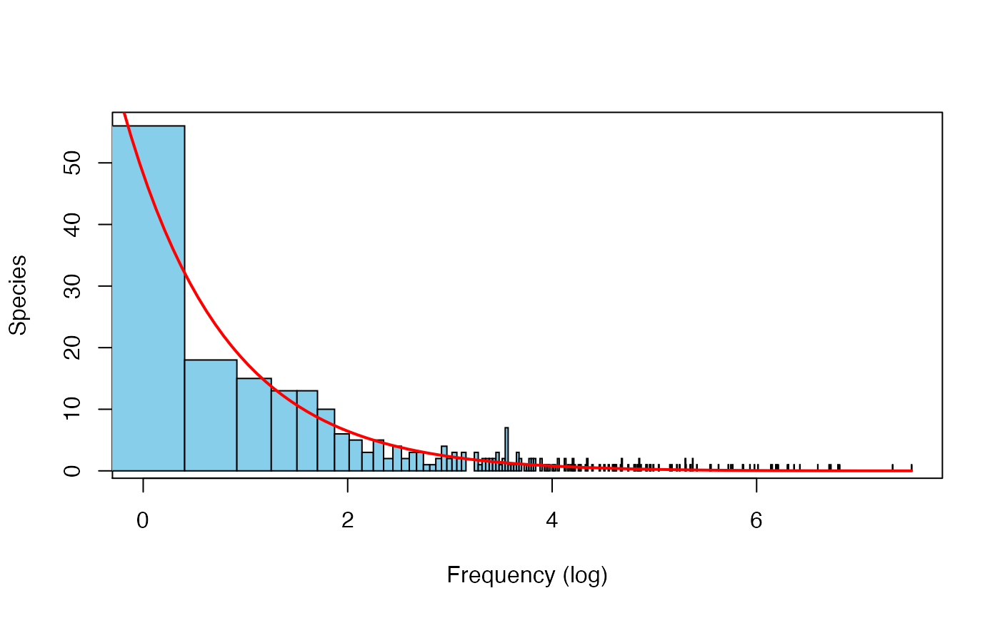

abund.RdCompute the abundances and relative abundances of species in simulated
communities and in the corresponding species pools. The input must be an output of
either coalesc or the forward functions.
abund(x)
| x | a list including the species pool composition ( |
|---|
species abundances and relative abundances in the reference pool
species abundances and relative abundances in the local community
# Simulation of a neutral community including 500 individuals J <- 500; theta <- 50; m <- 0.05; comm1a <- coalesc(J, m, theta) abund1a <- abund(comm1a) # Log-series distribution of regional abundances fit <- vegan::fisherfit(abund1a$pool$ab) freq <- as.numeric(names(fit$fisher)) plot(log(freq), fit$fisher, xlab = "Frequency (log)", ylab = "Species", type = "n")alpha <- fit$estimate k <- fit$nuisance curve(alpha * k^exp(x) / exp(x), log(0.5), max(log(freq)), col = "red", lwd = 2, add = TRUE)# Relationship between local and regional abundances par(mfrow=c(1, 2)) plot(abund1a$pool[rownames(abund1a$com), "relab"], abund1a$com$relab, main = "m = 0.05", xlab = "Regional abundance", ylab = "Local abundance", log = "xy") abline(0,1) # With higher immigration rate m <- 0.95 comm1b <- coalesc(J, m, theta) abund1b <- abund(comm1b) plot(abund1b$pool[rownames(abund1b$com),"relab"], abund1b$com$relab, main = "m = 0.95", xlab = "Regional abundance", ylab = "Local abundance", log = "xy")